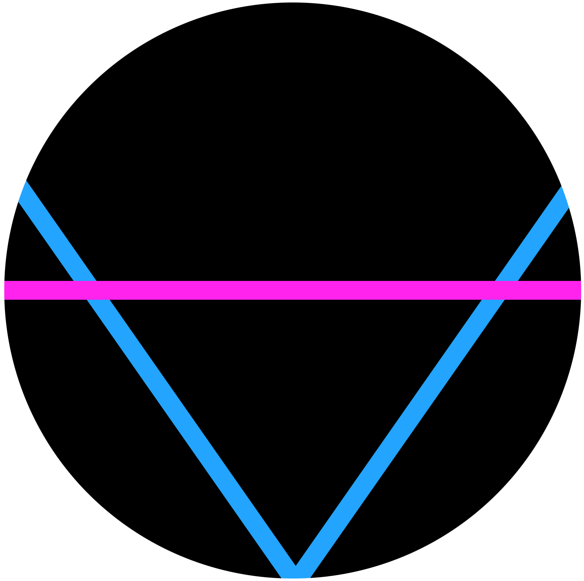

 Adrian Dolinay
Home
About
Podcast
Book Recommendations
The Aspiring STEM Geek
Select Podcast Episode:
Computer Science, Robotics and Teaching with Jacob Snarr - #10
Software Engineering, DevOps and Gaming with Shawn Dutill - #9
Content Creation, YouTube Analytics and Economics with Nate Wooding - #8
Engineering, Finance and Teaching with Ronald Anderson - #7
Music and Audio Technology with Evan McIntyre and Chris Krochak - #6
Cybersecurity with Ben Kofman - #5
Software, AI and ML with Taziamoma Abraham - #4
Tech News with Adrian Dolinay - #3
Robotics with Damian Kozak - #2
Talking Tech with Matthew Handzy - #1